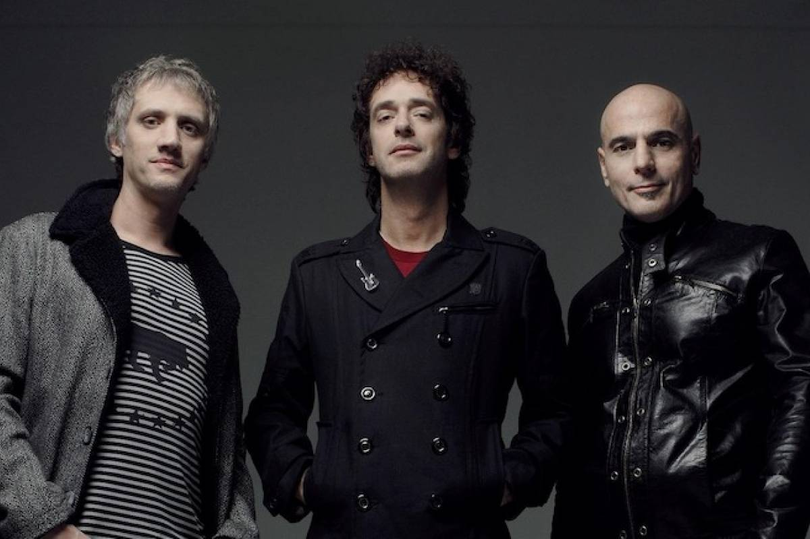

Soda Stereo

Soda Stereo fue una banda de rock argentina formada en 1982.
considerada ampliamente por la crítica especializada como la banda más importante, popular e influyente del rock en español,
es una leyenda de la música latinoamericana.
Stereo ha encabezado las listas de todos los tiempos en el mundo,
rompiendo varios récords de ventas de discos y asistencias a concierto

Fue el primer paso en popularidad del grupo, que llegaría a ser uno de las más populares de Latinoamérica. De este álbum,
el ranking de las 100 mejores canciones del rock argentino